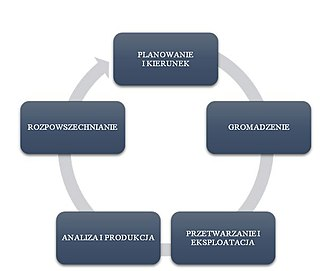

Wprowadzenie
Biały wywiad (ang. open-source intelligence, OSINT, rozpoznanie otwartoźródłowe) - kategoria rozpoznania oraz forma wywiadu gospodarczego, polegająca na gromadzeniu informacji pochodzących z ogólnodostępnych źródeł. Wywiadowcy posługują się wyłącznie jawnymi i etycznymi metodami pozyskiwania informacji.
Ważne fakty:
- Choć OSINT wywodzi się z tradycyjnej kryminalistyki tak codzienna praktyka pokazuje, ze przenika się z wieloma innymi dziedzinami, przede wszystkim z informatyką śledzczą (forensics).
- Swoje wymagania pod kątem wiedzy narzuci kazde śledztwo, a rozpoznawanie branż o których nie mamy pojęcia wymusi na nas zapoznanie się z prawami jakie nią kierują np. badając anomalie cenowe na rynku nawozów rolniczych będziesz musiał nauczyć się odrózniać fosforany od azotanów.
- Czynności operacyjne można podzielić na dwa rodzaje: rozpoznanie pasywne np. przeglądanie gotowych zbiorów danych jak baza KRS; oraz rozpoznanie aktynwe, w którym wchodzimy w interakcję z badanym podmiotem np. enumeracja subdomen.
- Zasadniczym ograniczeniem OSINTu jest granica dostępu do informacji, zarówno etyczna jak również wynikająca z aspektów prawnych czy ochrony prywatności. Niektóre czynności takie jak używanie np. wycieków baz danych są dyskusyjne, niektórzy uznają to wręcz za czerpanie korzyści z przestępstwa. Dla innych zaś materiały za paywallem również nie są materiałem całkowicie otwartym. Równie dyskusyjne są osobowe źródła informacji (OZI) zaliczanie w tradycyjnym wywiadzie do HUMINT. Granica co jest otwartym źródłem a co nie zależna jest od przyjętej polityki, metodologii śledztwa jak i podejścia wywiadowcy. Nieprzekraczalną granicą jest legalność działań choć i ono różni się w zależności od kraju i obowiązującego stanu prawnego.
- OSINT to ruletka. W niektórych przypadkach poznamy całą historię czyjegoś życia, w innych dana osoba może w ogóle nie istnieć.
- OSINT nie jest zjawiskiem nowym. Techniki otwartego wywiadu stosowano już w czasie I wojny światowej kiedy to nikt nie myślał o kodowaniu kanałowym łączności radiowej i ryzyku jej podsłuchiwania. Obecnie wraz z rozwojem społeczeństwa informacji zaczęto zwracać na niego uwagę, a prawdziwy rozgłos zyskał w momencie wybuchu wojny na Ukrainie. O historycznych przypadkach OSINTu przeczytasz tutaj.
Aspekt prawny¶
Art. 267. Kodeksu Karnego [Bezprawne uzyskanie informacji]
§ 1. Kto bez uprawnienia uzyskuje dostęp do informacji dla niego nieprzeznaczonej, otwierając zamknięte pismo, podłączając się do sieci telekomunikacyjnej lub przełamując albo omijając elektroniczne, magnetyczne, informatyczne lub inne szczególne jej zabezpieczenie, podlega grzywnie, karze ograniczenia wolności albo pozbawienia wolności do lat 2.
§ 2. Tej samej karze podlega, kto bez uprawnienia uzyskuje dostęp do całości lub części systemu informatycznego.
§ 3. Tej samej karze podlega, kto w celu uzyskania informacji, do której nie jest uprawniony, zakłada lub posługuje się urządzeniem podsłuchowym, wizualnym albo innym urządzeniem lub oprogramowaniem.
§ 4. Tej samej karze podlega, kto informację uzyskaną w sposób określony w § 1-3 ujawnia innej osobie.
§ 5. Ściganie przestępstwa określonego w § 1-4 następuje na wniosek pokrzywdzonego.
Zgodnie z definicją OSINT opiera się o legalne i powszechnie dostępne źródła informacji wobec, których przepis ten nie znajduje zastosowania. Dotyczy on jednak szeroko rozumianego włamywania się do systemów i urządzeń. Jezeli np. udałoby nam się pozyskać login i hasło przechowywane w indeksowanym przez Google pliku, skorzystanie z takich poświadczeń stanowi przestępstwo. Podobnie z sytuacją gdy uda się wstrzelić poprzez przysłowiowe admin/admin.
Art. 190a. Kodeksu Karnego [Uporczywe nękanie. Kradzież tożsamości]
§ 1. Kto przez uporczywe nękanie innej osoby lub osoby dla niej najbliższej wzbudza u niej uzasadnione okolicznościami poczucie zagrożenia, poniżenia lub udręczenia lub istotnie narusza jej prywatność, podlega karze pozbawienia wolności od 6 miesięcy do lat 8.
§ 2. Tej samej karze podlega, kto, podszywając się pod inną osobę, wykorzystuje jej wizerunek, inne jej dane osobowe lub inne dane, za pomocą których jest ona publicznie identyfikowana, przez co wyrządza jej szkodę majątkową lub osobistą.
§ 3. Jeżeli następstwem czynu określonego w § 1 lub 2 jest targnięcie się pokrzywdzonego na własne życie, sprawca podlega karze pozbawienia wolności od lat 2 do 15.
§ 4. Ściganie przestępstwa określonego w § 1 lub 2 następuje na wniosek pokrzywdzonego.
Zastosowanie tego przepisu dotyczy głównie tworzenia kont operacyjnych. O ile mają one wyglądać jak najbardziej prawdziwie, tak korzystanie z danych istniejących osób nosi znamiona kradzieży tożsamosci. Możemy stworzyć konto na zmyślone personalia ze zdjęciem wygenerowanym przez AI. Nie możemy natomiast nazwać profilu Teofil Jesionowski i wrzucić na profilowe zdjęcia JM Rektora.
Art. 6 pkt. 1 RODO
Przetwarzanie jest zgodne z prawem wyłącznie w przypadkach, gdy – i w takim zakresie, w jakim – spełniony jest co najmniej jeden z poniższych warunków:
a) osoba, której dane dotyczą wyraziła zgodę na przetwarzanie swoich danych osobowych w jednym lub większej liczbie określonych celów;
b) przetwarzanie jest niezbędne do wykonania umowy, której stroną jest osoba, której dane dotyczą, lub do podjęcia działań na żądanie osoby, której dane dotyczą, przed zawarciem umowy;
c) przetwarzanie jest niezbędne do wypełnienia obowiązku prawnego ciążącego na administratorze;
d) przetwarzanie jest niezbędne do ochrony żywotnych interesów osoby, której dane dotyczą, lub innej osoby fizycznej;
e) przetwarzanie jest niezbędne do wykonania zadania realizowanego w interesie publicznym lub w ramach sprawowania władzy publicznej powierzonej administratorowi;
f) przetwarzanie jest niezbędne do celów wynikających z prawnie uzasadnionych interesów realizowanych przez administratora lub przez stronę trzecią, z wyjątkiem sytuacji, w których nadrzędny charakter wobec tych interesów mają interesy lub podstawowe prawa i wolności osoby, której dane dotyczą, wymagające ochrony danych osobowych, w szczególności gdy osoba, której dane dotyczą, jest dzieckiem.
RODO określa podstawy przetwarzania danych osobowych osób fizocznych na terenie UE. Dla OSINTowców najważniejszy jest kontekst wypełnienia przez administratora obowiązków prawnych. Może to obejmować np. konieczność publikowania oświadczeń majątkowych przez osoby publiczne. Z drugiej strony art. 6 wspomina o zgodzie wyrażonej przez osobę, której dane dotyczą. Jeżeli jest to np. zgoda wydana Facebookowi (Meta) osoba taka sama poświadczyła, że zdaje sobie sprawę z faktu, że jej tresci będą dostępne w tym serwisie i mogą być dostępne publicznie w określonych przypadkach. Tym samym RODO nie określa zakresu działań OSINTowców, a jedynie definiuje dlaczego pewne informacje mogą znaleźć się w sferze publicznej.
Ustawa z dnia 6 września 2001 r. o dostępie do informacji publicznej
Art. 1. [Definicja informacji publicznej. Zakres zastosowania przepisów ustawy]
- Każda informacja o sprawach publicznych stanowi informację publiczną w rozumieniu ustawy i podlega udostępnieniu na zasadach i w trybie określonych w niniejszej ustawie.
...
Art. 2. [Prawo do informacji publicznej]
Każdemu przysługuje, z zastrzeżeniem art. 5, prawo dostępu do informacji publicznej, zwane dalej "prawem do informacji publicznej".
Od osoby wykonującej prawo do informacji publicznej nie wolno żądać wykazania interesu prawnego lub faktycznego.
Informacja publiczna jest szerokim terminem i zależy od interpretacji danego organu. W ogólności może być wykorzystywana do uzyskiwania informacji o szeroko rozumianych sprawach publicznych np. o formie wykorzystania funduszy państwowych. Do informacji publicznej zaliczono nawet kod źródłowy mObywatela, który ma zostać kiedyś opublikowany. Informacje publiczne często agregowane są w Biuletynach Informacji Publicznych (BIP).
Jeżeli zasób jest dostępny publicznie nie potrzebujemy zgody na skorzystanie z niego. Zastosowanie mogą mieć tu jednak odrębne przepisy np. ustawa o prawie autorskim i prawach pokrewnych.
Terminologia¶
- Figurant - cel rozpoznania czyli dana osoba, firma lub instytucja
- Selektor - informacja powiązana z figurantem np. e-mail, NIP, adres zamieszkania czy imię psa
- Transformacja - przekształcenie selektora w inny selektor
- Śledztwo - zbiór działań mających uzyskać określone dane dot. figuranta
-
False-positive (błąd pierwszego rodzaju) - informacja fałszywie dodatnia
-
HUMINT, human intelligence - osobowe źródła informacji (OZI)
- SOCMINT, SMINT, social media intelligence - wywiad mediów społecznościowych
- SIGINT, signal intelligence - rozpoznanie elektromagnetyczne
- TECHINT, technical intelligence - rozpoznanie techniczne
- GEOINT, geographical intelligence - rozpoznanie w oparciu o geolokalizację i kartografię
- FININT, finance intelligence - rozpoznanie finansowe
- OPSEC, operations security - bezpieczeństwo operacyjne
Cykl wywiadowczy¶
Polski proces wywiadowczy definiuje doktryna rozpoznanie wojskowe D/2, zawiera czteroetapowy model cyklu rozpoznawczego realizowanego przez Wojsko Polskie i polskie służby wywiadowcze. Nie jest to jednak jedyny model. Bardzo często stosuje się też model amerykański oraz australisjki. W ogólności można przyjąć następujący cykl zgodny ze standardami NATO, który jest klasycznym modelem wojskowym.
- Ukierunkowanie to faza inicjująca proces rozpoznania lub nadająca mu nowy kierunek, cel bądź zakres. Dzieli się ona na dwa etapy – określenie wymagań informacyjnych i przygotowanie działań rozpoznawczych;
- Gromadzenie polega na wykorzystaniu potencjału informacyjnego (wszystkich dostępnych źródeł) i wykonawczego systemu rozpoznania (operacyjnego pozyskiwania danych) w celu zdobycia danych oraz dostarczenia ich do przetworzenia w wiadomości rozpoznawcze. Gromadzenie danych również dzieli się na dwa etapy – pozyskiwanie (użycie wszelkich źródeł i sposobów zdobywania danych oraz ich koordynacja) i zbieranie (terminowe skupienie pochodzących z różnych źródeł, rozproszonych zbiorów informacji, a następnie przekazanie ich do komórek analitycznych);
- Przetwarzanie to przekształcanie zgromadzonych danych w wiadomości rozpoznawcze. Głównymi etapami tej fazy są: zestawianie (ewidencja), ocena (pewności źródła i wiarygodności), analiza i integracja oraz interpretacja;
- Rozpowszechnianie jest terminowym i celowym przekazywaniem wiadomości rozpoznawczych z pomocą odpowiednich środków w określonej formie uprawnionym podmiotom. Owe formy dzielą się na: rozpowszechnianie elektroniczne, pisemne i graficzne, a także ustne.

W nomenklaturze NATO wyróżnia się ponadto 4 etapy przetwarzania informacji otwartoźródłowej:
- Open Source Data (OSD) - surowe dane z otwartych źródeł niepodane żadnej obróbce.
- Open Source Information (OSIF) - dane poddane odpowiedniemu skategoryzowaniu, przetworzeniu (np. dekodowaniu) i wstępnej analizie.
- Open Source Intelligence (OSINT) - dane w pełni przeanalizowane, zwykle poddane dodatkowemu opisowi. Dopiero na tym etapie możemy zacząć mówić o danych wywiadowczych.
- Validated Open Source Intelligence (OSINT-V) - dane przeanalizowane dodatkowo zweryfikowane i skorelowane w oparciu o inne dostępne materiały wywiadowcze.
W swoich założeniach śledztwo ma doprowadzić do ustalenia konkretnej informacji np. czy osoba X jest udziałowcem spółki Y. Przeprowadzenie śledztwa, które zbierze "wszystko" poskutkuje jedynie ślepą nieskończoną pętlą, w której będziemy oddalać się od celu śledztwa. Innymi słowy nie ma sensu badać rodziny figuranta 9 pokoleń wstecz.
Źródła informacji¶
Google Hacking¶
Google hacking – termin opisujący stosowanie specjalnie dobranych zapytań dla popularnej wyszukiwarki internetowej Google, które pozwalają na odszukanie informacji przydatnych z punktu widzenia analizy bezpieczeństwa innych witryn WWW. Wbrew nazwie działania takie można prowadzić również dla innych popularnych wyszukiwarek jak Bing, Yandex itp.
- Operatory Google
- Operatory Bing. Warto wspomnieć o unikalnym dla Binga operatorze IP, który ogranicza wyniki do danego adresu IP.
- Operatory Yandex
Przykłady dorków:
- inurl:microsoft filetype:iso – pliki obrazów płyt ze stron zawierających w URL słowo Microsoft
- filetype:bak inurl:"htaccess|passwd|shadow|htusers" – pliki konfiguracyjne serwisów WWW v intitle:"Index of" .mysql_history – historia zapytań SQL z serwisów WWW
- 90010100000..99123199999 +pesel filetype:xls – pliki Excela zawierające numery PESEL z danego przedziału
- site:cat.put.poznan.pl filetype:pdf intitle:plan semestr 7 – plany zajęć w formie PDF dla semestru siódmego ze strony WIiT.
Należy pamiętać, że Google nie musi indeksować każdego zasobu, ale z drugiej strony indeksuje często to co niekoniecznie powinno być publicznie dostępne. W przypadku wysyłania wielu złożonych zapytań Google może wymagać wypełniania Captchy.
Nie każda wyszukiwarka musi zwrócić jednakowe wyniki. W niektórych przypadkach Yandex może dać lepsze wyniki od Googla lub odwrotnie. Dotyczy to zarówno dorków jak i wyszukiwania obrazem.
Wyszukiwanie obrazem¶
Wyszukiwarki umożliwiają wyszukiwanie wsteczne z użyciem obrazu. Ich możliwości są jednak zróżnicowane np. Bing potrafi odczytywać tylko znaki w alfabecie łacińskim. Algorytmy wyszukiwarek bazują na odmiennych elementach, niektóre na wizualnym podobieństwie, inne zaś na uczeniu maszynowym. Więcej o skuteczności wyszukiwania obrazem znajdziesz tutaj.
Software¶
- Maltego - oprogramowanie pełni dwie role. Z jednej strony pozwala na obrazowanie selektorów w postaci grafów i umozliwia stworzenie całej "tablicy dowodów". Z drugiej pozwala ono na automatyzację transformacji np. poprzez integrację z róznymi API. Jest jedną z popularniejszych aplikacji, ale pomimo popularnego przeświadczenia nie zrobi śledztwa za nas. Więcej o Maltego TUTAJ.
- Recon-ng - alternatywne dla Maltego narzędzie słuzące do prowadzenia transformacji automatycznych w oparciu o dołączone wtyczki.
- Project Sherlock - oprogramowanie do wyszukiwania kont w oparciu o pseudonim.
- Spiderfoot, TheHarvester - programy przeznaczone do threat intelligence.
- Exiftool - oprogramowanie do przeglądania metadanych. Podstawowa wersja jest tekstowa.
- Shodan - taki Google, ale wyszukujący urządzenia sieciowe zamiast stron WWW.
- Hunchly - oprogramowanie integrowane z przeglądarką internetową. Pozwala oznaczać i archiwizować konkretne zasoby przeglądane w internecie w oparciu o słowa kluczowe.
- Youtube-DL - oprogramowanie słuzące do pobierania filmów m.in. z Youtuba. Z powodzeniem działa tez na innych platformach.
- Data Miner - wtyczka do Chroma umozliwiająca automatyczne pobieranie treści ze stron internetowych i ich zapisywania w ustrukturalizowanym pliku.
- VideoDownloadHelper - wtyczka służąca do pobierania wideo ze stron WWW.
- DownThemAll - wtyczka do masowego pobierania plików ze stron WWW.
- dnsenum - narzędzie do enumeracji przestrzeni DNS. Pozwala na znajdowanie subdomen, które nie są przechowywane w bazach WHOIS.
OPSEC¶
Ciekawe case study¶
- Otrucie Skripala
- Rosyjska dezinformacja w USA
- Sprawa Natalii Janoszek
- Kampania scamowa Norton
- Anatomy of a killing
- Czy grecka straż przybrzeżna stosuje pushbacki
- Dom Przyjaźni koreańsko-rosyjskiej
Metryka zmian¶
| Wersja | Data | Osoba | Opis zmian |
|---|---|---|---|
| v1.0.0 | 08.03.2024 | Grzegorz Jaskuła | Wersja bazowa |
| v1.0.0a | 09.03.2024 | Grzegorz Jaskuła | Pliki graficzne przeniesione do folderu /assets |
| v1.0.1 | 20.03.2024 | Grzegorz Jaskuła | Uzupełnienia, BIP, image search, literówki |
| v1.0.2 | 10.05.2024 | Grzegorz Jaskuła | OPSEC przeniesiony w pełni do opsec_wiki.md |
| v1.0.3 | 10.05.2024 | Grzegorz Jaskuła | Dodano case study DPRK |